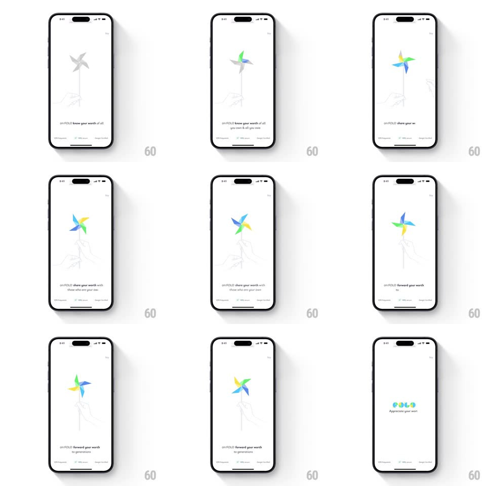

Media
Frame-by-frame

Rebuild this animation 1:1: Folo's onboarding - a line-art hand holding a pinwheel draws in, the pinwheel fills with color blade by blade as the copy cycles, and the sequence lands on the FOLO logo.

Rebuild this animation 1:1: Folo's onboarding - a line-art hand holding a pinwheel draws in, the pinwheel fills with color blade by blade as the copy cycles, and the sequence lands on the FOLO logo.
## Integration
Integration: stack-agnostic spec - springs given as stiffness/damping, timed motions as duration + curve; map every value to your framework and animation library of choice.
## Scene
White auto-playing sequence: a fine line-art illustration of a hand holding a pinwheel, cycling lowercase copy ("on FOLO know your worth of all you own & all you owe", "on FOLO share your worth with those who are your own", "on FOLO forward your worth to generations"), a Skip link, and a final frame with the colorful FOLO logo and "Appreciate you".
## Motion spec
Pattern: progressive color reveal with text cycling, ~8s total.
- Draw: the line-art hand and pinwheel stroke in (1.2s, ease-in-out).
- Color: the pinwheel's four blades fill one at a time (blue, green, yellow, teal - 300ms each, 400ms apart) as the pinwheel starts a slow spin (one revolution per 6s).
- Text: each line crossfades with a slight blur (400ms) on a 2.5s cycle.
- Finale: the illustration fades (300ms) and the FOLO logo's four dots pop in (spring ~440/18, 60ms stagger) with "Appreciate you" fading under (250ms).
## Calibration
- The blades colorize in spin order, not all at once.
- The pinwheel keeps its slow spin through every text change.
## Reduced motion
Frames crossfade; the pinwheel is static and fully colored.
## Don't miss
- The illustration is true line art - hairline strokes, no fills until the blades.
- The logo's dots are the blade colors - the pinwheel becomes the mark.